Features
Pricing
About
Contact us
miRide
miRide is a mobile application made for anyone who travels
without a car.it compares a variety of ride services based on various filters
such as prices and traveling distances to fit everyone's preferences
Download now
Features
miService
Find the right service for the right price every time with miService!
Using our custom algorithm, miRide scans the ride service apps
that you already have downloaded on your phone to ensure the best
price and the shortest wait times. Flipping through apps is a thing
of the past thanks to miRide
miRoute
Plan ahead for any trip using miRoute! Choose from a variety of ways
to get around based on your preferences including:
- Public Transit
- Ride Service*
- Taxi Cab
- Bike Service
*Real time rate estimates based on real data
miCarpool
Whether you want to save the planet or save your wallet, miCarpool
is the perfect solution. By connecting drivers to passengers, miCarpool
provides an easy way to share a ride with your peers. Just post where
you're going, when you're leaving, and how much room you have to get
matched up with the perfect passengers.
miRide in Numbers
miRide in Words
"miRide will change the car-sharing app game.
It's so reliable and it's helped me get to where I need
to be so many times! I tell everyone I know about this app!"
- Spencer Roberts "
"Everyone needs to get this app! I'm a very busy person and
miRide helps me plan ahead and lets me be on time no matter
the occasion!" - Gabriella Tucker
"miRide is an essential app that everyone needs! Especially if you
work or live in a busy city, commuting can be stressful. This app
helps you stay on time and plan your rides hours ahead." - Tim Charles
miRide Premium
| Services |
Basic |
Premium |
| Feature 1 |
check |
check |
| Feature 2 |
check |
check |
| Feature 3 |
X |
check |
| Feature 4 |
X |
check |
| Feature 5 |
X |
check |
Logo
Features
Pricing
About us
Contact us
About us
Unus
Unus is a growing company within the web company. We develop mobile apps to provide better services to citizens in
different regions. Currently, our team is working on our first product: miRide, an app designed to help Ottawa citizens
travel within their city at a lower cost. As we work on building and promoting the app, our company is always searching
for new projects to develop and make our company grow.
Meet the team

Vivienne Cruz
Specialties: smth smth smth
Project's description - « Texte » est issu du mot latin « textum », dérivé du verbe « texere » qui
signifie « tisser ». Le mot s'applique à l'entrelacement des fibres utilisées dans le tissage, voir
par exemple Ovide : « Quo super iniecit textum rude sedula Baucis = (un siège) sur lequel Baucis empressée
avait jeté un tissu grossier »2 ou au tressage (exemple chez Martial « Vimineum textum = panier d'osier tressé »).
Le verbe a aussi le sens large de construire comme dans « basilicam texere = construire une basilique »
chez Cicéron3. Le sens figuré d'éléments de langage organisés et enchaînés apparaît avant l'Empire romain :
il désigne un agencement particulier du discours.

Yvan Cubahiro
Specialties: smth smth smth
Project's description - « Texte » est issu du mot latin « textum », dérivé du verbe « texere » qui
signifie « tisser ». Le mot s'applique à l'entrelacement des fibres utilisées dans le tissage, voir
par exemple Ovide : « Quo super iniecit textum rude sedula Baucis = (un siège) sur lequel Baucis empressée
avait jeté un tissu grossier »2 ou au tressage (exemple chez Martial « Vimineum textum = panier d'osier tressé »).
Le verbe a aussi le sens large de construire comme dans « basilicam texere = construire une basilique »
chez Cicéron3. Le sens figuré d'éléments de langage organisés et enchaînés apparaît avant l'Empire romain :
il désigne un agencement particulier du discours.
.jpg)
Marianne Dery
Specialties: web design java script
I am a software engineering student at the University of Ottawa. I am hardworking and curious, I'm always
ready to learn more about the world of programmation. My pation are programming and webdesing. You'll always
see me either on my computer programming my newest project or with a pen and paper designing the next one.

Marshall Steele
Specialties: ios app development smth smth
My name is Marshall Steele and my main interests include app development and design. Whether you’re chatting with
friends, ordering delivery, or just killing time waiting for the bus, apps have made their way into every aspect
of our everyday lives. I believe the applications of this technology are limitless and innovative software will
continue to change the way we live our lives. When I’m not at work, I like to spend my spare time hiking, playing
video games, swimming, and travelling.

Kevin Wang
Specialties: smth smth smth
Project's description - « Texte » est issu du mot latin « textum », dérivé du verbe « texere » qui
signifie « tisser ». Le mot s'applique à l'entrelacement des fibres utilisées dans le tissage, voir
par exemple Ovide : « Quo super iniecit textum rude sedula Baucis = (un siège) sur lequel Baucis empressée
avait jeté un tissu grossier »2 ou au tressage (exemple chez Martial « Vimineum textum = panier d'osier tressé »).
Le verbe a aussi le sens large de construire comme dans « basilicam texere = construire une basilique »
chez Cicéron3. Le sens figuré d'éléments de langage organisés et enchaînés apparaît avant l'Empire romain :
il désigne un agencement particulier du discours.